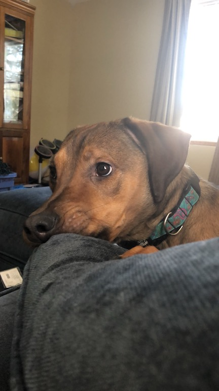

My Puppy: Maisy
All about my puppy, Maisy, and her favorite things to do!
Maisy is my puppy. We got her in November 2016 at the All For Paws Rescue. While we do not
know what kind of dog she is, we do know that she is a mix of many types including boxer and
possibly even coonhound (because she has webbed feet). She is a very big dog. When I lay on the
ground with her, she is just as tall as me! Believe it or not, she was very small when
we first got her.

Some of Maisy's favorite past times include eating pillows (as shown in the picture), playing
playing with ropes, snuggling, and running laps around the house! She is a very active
puppy and hates being home alone in her crate all day because she can't spend time with
the people she loves most!
Maisy's absolute favorite thing to do is to talk with her friends. Often, they stay up late
at night "texting" each other! Maisy's best friend is Bentley and they love to send each other
pictures all the time!
Bentley is an older dog than Maisy. Her owner, Joy, loves to play and snuggle with her too.
Both Bentley and Maisy love going on walks, playing, and sleeping. They have many things in
common and they talk about going on walks all the time! They are both very silly dogs who like
to eat household objects as well as food. Bentley is one of Maisy's best friend.
More Resources to Learn About Dogs and How to Adopt Them:
© 2018 Maisy the Puppy